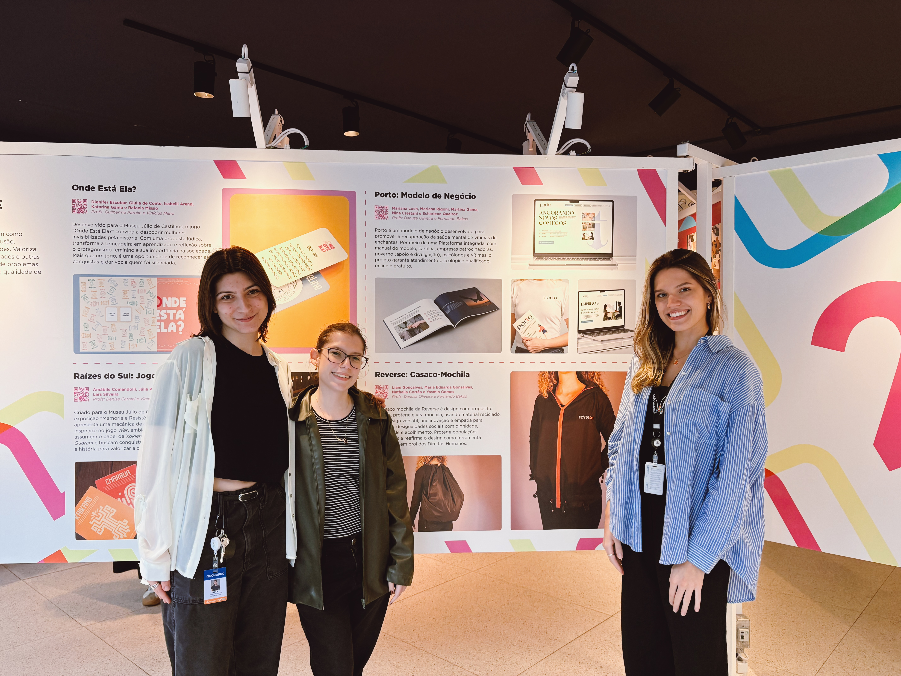
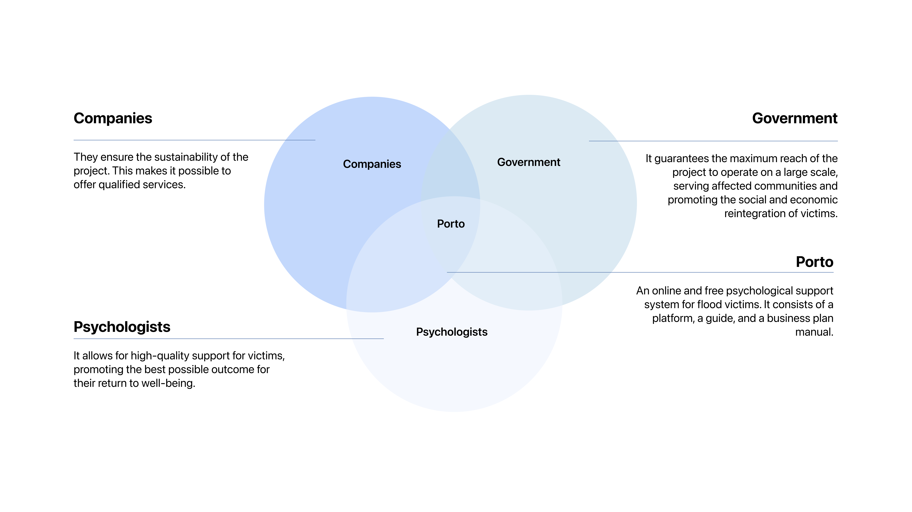
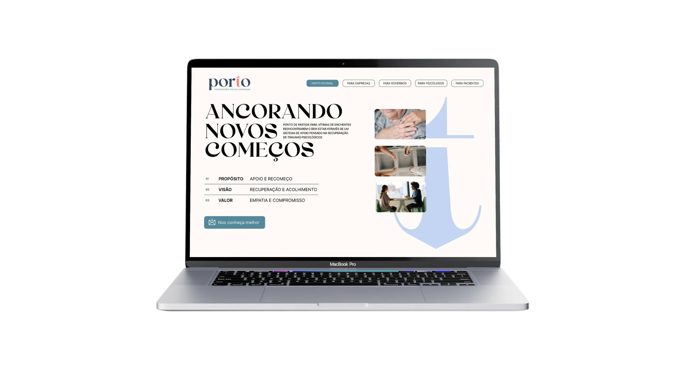
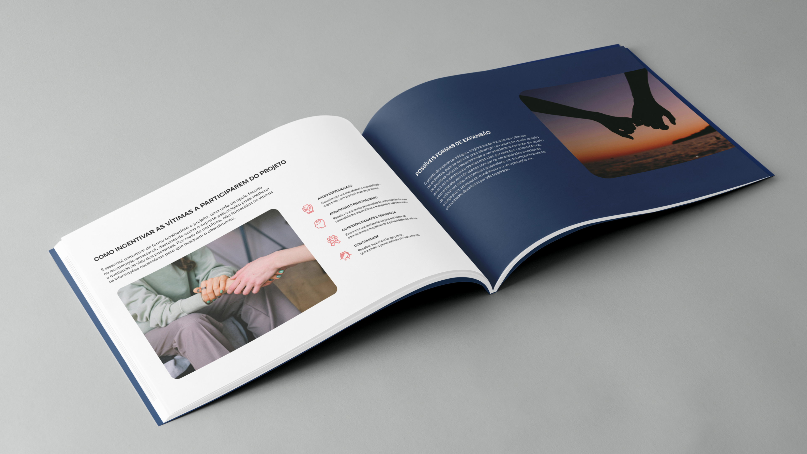
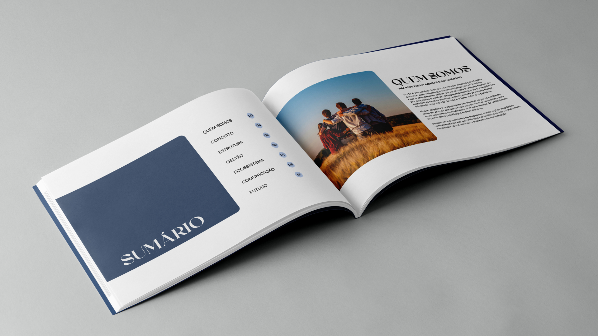

/ Strategic Design · Branding · UX/UI · 2024
A sustainable support model offering continuous psychological care to flood survivors, built as a team project in response to the 2024 floods in Rio Grande do Sul — strategic design, service design, branding, and UX/UI, from business model to interface.

Selected for the FAMECOS Design Biennial — PUCRS, 2025.
/ Context
In 2024, Rio Grande do Sul was hit by its worst floods in recorded history, displacing hundreds of thousands of people across the state. Beyond the physical damage, the disaster left a lasting psychological toll — the kind of continuous, long-term impact that most emergency response is not built to address.
Porto is a free, online psychological support system for people affected by the floods, built around three deliverables: a digital platform, a practical guide, and a business plan for sustaining it over time — not just in the immediate aftermath, but for as long as recovery takes.
The project was selected as a Featured Project at the FAMECOS Design Biennial (PUCRS).
/ Approach
The project combined strategic and visual design into one system: a sustainable business model behind the support service, a visual identity to carry it, and a digital interface to make continuous care accessible.
A sustainability model built on three stakeholders: companies fund and sustain the service, government guarantees its reach and scale, and psychologists guarantee the quality of care.
The support system itself — how someone enters, stays connected to, and moves through ongoing care over time.
A visual identity built around the idea of anchoring — a harbor for people rebuilding a sense of stability.
A digital interface to make the support system accessible and easy to navigate.

/ Applications
Applied across branding materials and the digital interface, keeping the same visual language legible at every touchpoint.


